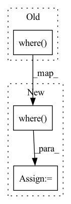

Pattern ID :1939
Before Change
tmp = g_t.sub(g_p).pow(2)
if self.f_under != 1:
// Weighting if gains are too low
tmp *= torch.where( g_p < g_t, self.f_under, 1.0)
if max_bin is not None:
m = torch.ones((b, 1, 1, f), device=input.device)
for i, mb in enumerate(max_bin):
m[i, ..., mb:] = 0After Change
tmp = g_t.sub(g_p).pow(2)
if self.f_under != 1:
// Weighting if gains are too low
tmp = tmp * torch.where( g_p < g_t, self.f_under, 1.0)
if max_bin is not None:
m = torch.ones((b, 1, 1, f), device=input.device)
for i, mb in enumerate(max_bin):
m[i, ..., mb:] = 0In pattern: SUPERPATTERN
Frequency: 4
Non-data size: 3
Instances Fragment ID: 7263790
Project Name: rikorose/deepfilternet
Commit Name: 9ef5fce18f7af5f101e512ad48a94142e17fae7b
Time: 2022-12-20
Author: h.schroeter@pm.me
File Name: DeepFilterNet/df/loss.py
M Class Name: MaskLoss
N Class Name: MaskLoss
M Method Name: forward(5)
N Method Name: forward(5)
M Parent Class: nn.Module
N Parent Class: nn.Module
M File Name: DeepFilterNet/df/loss.py
N File Name: DeepFilterNet/df/loss.py
M Start Line: 261
M End Line: 264
N Start Line: 260
N End Line: 263
Before Change
loss += loss_loc * self.box_ratio + loss_cls * self.cls_ratio
if self.focal_loss:
ratio = torch.where( obj_mask, torch.ones_like(conf) * self.alpha, torch.ones_like(conf) * (1 - self.alpha)) * torch.where(obj_mask, torch.ones_like(conf) - conf, conf) ** self.gamma
loss_conf = torch.mean((self.BCELoss(conf, obj_mask.type_as(conf)) * ratio)[noobj_mask.bool() | obj_mask]) * self.focal_loss_ratio
else:
loss_conf = torch.mean(self.BCELoss(conf, obj_mask.type_as(conf))[noobj_mask.bool() | obj_mask])After Change
// 计算是否包含物体的置信度损失
//---------------------------------------------------------------//
if self.focal_loss:
pos_neg_ratio = torch.where( obj_mask, torch.ones_like(conf) * self.alpha, torch.ones_like(conf) * (1 - self.alpha))
hard_easy_ratio = torch.where(obj_mask, torch.ones_like(conf) - conf, conf) ** self.gamma
loss_conf = torch.mean((self.BCELoss(conf, obj_mask.type_as(conf)) * pos_neg_ratio * hard_easy_ratio)[noobj_mask.bool() | obj_mask]) * self.focal_loss_ratio
else: Fragment ID: 7263791
Project Name: bubbliiiing/yolov4-pytorch
Commit Name: eda96cab3f3e7a355b6df9f3f2ab56e20aacc2fd
Time: 2022-04-13
Author: 3323290568@qq.com
File Name: nets/yolo_training.py
M Class Name: YOLOLoss
N Class Name: YOLOLoss
M Method Name: forward(4)
N Method Name: forward(4)
M Parent Class: nn.Module
N Parent Class: nn.Module
M File Name: nets/yolo_training.py
N File Name: nets/yolo_training.py
M Start Line: 202
M End Line: 217
N Start Line: 202
N End Line: 223
Before Change
loss = F.mse_loss(input_abs, target_abs) * self.f_m
if self.f_under != 1:
// Weighting if predicted abs is too low
loss = loss * torch.where( input_abs < target_abs, self.f_u, 1.0)
if self.f_c > 0:
if self.gamma != 1:
input = input_abs * torch.exp(1j * angle.apply(input))
target = target_abs * torch.exp(1j * angle.apply(target))After Change
tmp = (input_abs - target_abs).pow(2)
if self.f_u != 1:
// Weighting if predicted abs is too low
tmp *= torch.where( input_abs < target_abs, self.f_u, 1.0)
loss = torch.mean(tmp) * self.f_m
if self.f_c > 0:
if self.gamma != 1:
input = input_abs * torch.exp(1j * angle.apply(input)) Fragment ID: 7263788
Project Name: rikorose/deepfilternet
Commit Name: 0675930ad5e32849bd06ca2de018dcebfc043de5
Time: 2022-10-20
Author: Rikorose@users.noreply.github.com
File Name: DeepFilterNet/df/loss.py
M Class Name: SpectralLoss
N Class Name: SpectralLoss
M Method Name: forward(3)
N Method Name: forward(3)
M Parent Class: nn.Module
N Parent Class: nn.Module
M File Name: DeepFilterNet/df/loss.py
N File Name: DeepFilterNet/df/loss.py
M Start Line: 158
M End Line: 167
N Start Line: 158
N End Line: 167
Before Change
image_tokens = self.image_to_cond(image_embed)
image_tokens = torch.where(
rearrange(cond_prob_mask, "b -> b 1 1"),
image_tokens,
self.null_image_embed
)
c = torch.cat((time_tokens, image_tokens), dim = -2) // c for condition
hiddens = []After Change
image_tokens = self.image_to_cond(image_embed)
image_tokens = torch.where(
cond_prob_mask,
image_tokens,
self.null_image_embed
)
// take care of text encodings (optional)
if exists(text_encodings): Fragment ID: 7263786
Project Name: lucidrains/dalle2-pytorch
Commit Name: 9f55c24db6805761e1907ee379a1f7036d07018b
Time: 2022-04-14
Author: lucidrains@gmail.com
File Name: dalle2_pytorch/dalle2_pytorch.py
M Class Name: Unet
N Class Name: Unet
M Method Name: forward(3)
N Method Name: forward(3)
M Parent Class: nn.Module
N Parent Class: nn.Module
M File Name: dalle2_pytorch/dalle2_pytorch.py
N File Name: dalle2_pytorch/dalle2_pytorch.py
M Start Line: 808
M End Line: 833
N Start Line: 811
N End Line: 856